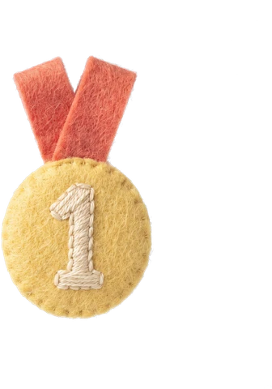

MY PLAY COLLECTION
오늘은 어떤 이야기를
이어 볼까요?
한 판의 기록, 내가 고른 소품, 함께 만든 추억.
모은 놀이를 다시 열고 다음 장면을 만들어 봐요.
갖고 싶은 것, 해 보고 싶은 놀이
배운 말을 다시 써 볼 소품, 친구와 만드는 장면, 내 탐험의 기념사진.
New toys, shared moments, and keepsakes of what you have done.

MY PLAY COLLECTION
한 판의 기록, 내가 고른 소품, 함께 만든 추억.
모은 놀이를 다시 열고 다음 장면을 만들어 봐요.
배운 말을 다시 써 볼 소품, 친구와 만드는 장면, 내 탐험의 기념사진.
New toys, shared moments, and keepsakes of what you have done.